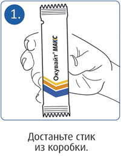
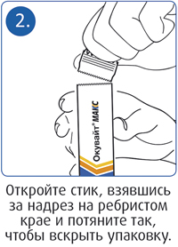
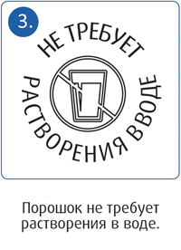
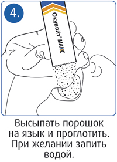

|
 |
| ОКУВАЙТ® МАКС (OCUVITE® MAX) порошок д/приема внутрь | |||||||||||||||||||||||
|
Номер и дата регистрации: RU.77.99.88.003.R.003728.11.20 от 10.11.20 Групповая принадлежность: БАД для поддержания функции органа зрения |
Владелец регистрационного удостоверения: зарегистрировано Представительство: | ||||||||||||||||||||||
Форма выпуска, состав и упаковка Порошок для приема внутрь. Состав: докозагексаеновая кислота (ДГК) (порошок из водорослей Schizochytrium spp.), подсластитель: сорбитол (Е420), наполнитель: изомальт (Е953), L-аскорбиновая кислота (витамин C); натуральный лютеин (экстракт из цветов бархатцев Tagetes erecta на матрице из сиропа декстрозы (глюкозы), модифицированного пищевого кукурузного крахмала, DL-α-токоферола ацетата, натрия аскорбата), DL-α-токоферола ацетат (витамин E), цинка цитрат, натуральный зеаксантин (экстракт из цветов бархатцев Tagetes erecta на матрице модифицированного пищевого кукурузного крахмала, DL-α-токоферола ацетата), ароматизатор натуральный концентрированный апельсиновый, регулятор кислотности: лимонная кислота (Е330), подсластитель: сукралоза (Е955).
* ТР ТС 022/2011 "Пищевая продукция в части ее маркировки" (Приложение 2). 2 г - стики (30) - пачки картонные. | |||||||||||||||||||||||
| |||||||||||||||||||||||
Описание препарата основано на официально утвержденной инструкции по применению и утверждено компанией-производителем для издания 2023 г. | |||||||||||||||||||||||
Свойства |
Область применения |
Рекомендации по применению |
Побочное действие |
Противопоказания |
Беременность и лактация |
Особые указания |
Передозировка |
Лекарственное взаимодействие |
Условия хранения и сроки годности |
Условия реализации
Свойства
Биологически активная добавка к пище Окувайт® Макс - источник каротиноидов (лютеина, зеаксантина), докозагексаеновой кислоты (ДГК) и дополнительный источник витаминов С, Е и цинка, специально разработана для сохранения здоровья глаз. Компоненты, входящие в состав продукта, не вырабатываются организмом и рекомендуются для включения в ежедневный рацион питания. Содержащиеся в составе продукта каротиноиды способствуют защите сетчатки от разрушающего воздействия яркого света, снижают риск возникновения и развития возрастных дегенеративных изменений сетчатки и обладают антиоксидантными свойствами. Лютеин - каротиноид, который служит естественной защитой сетчатки от слишком яркого света, снижает риск возникновения и развития возрастных дегенеративных изменений сетчатки и обладает антиоксидантными свойствами. Зеаксантин - желтый пигмент из группы ксантофиллов, накапливается в пигменте сетчатки глаза человека, играет роль защитного механизма от индуцируемого светом повреждения клеток, способствует разрушению липофусцина. Клинические исследования показали, что длительный прием лютеина и зеаксантина повышает плотность макулярного пигмента и способствует поддержанию высокой остроты зрения. Витамины С и Е, цинк, входящие в состав биологически активной добавки к пище Окувайт® Макс, являются естественными антиоксидантами и помогают снизить воздействие вредных факторов и сохранить зрение, способствуют укреплению кровеносных сосудов, в т.ч. сосудов глазного дна. Витамин С - один из главных, необходимых человеку антиоксидантов. Участвует в регулировании окислительно-восстановительных процессов, углеводного обмена, свертываемости крови, регулирует восстановление зрительных пигментов, уменьшает повышенное внутриглазное давление, снижает риск развития глаукомы. Витамин Е - выполняет роль биологического антиоксиданта, инактивирующего свободные радикалы и тем самым препятствующего их образованию. Препятствует повышенной ломкости и проницаемости капилляров. Способствует профилактике возникновения и усугублению уже имеющейся катаракты. Цинк - участвует в процессах антиоксидантной защиты клеточных мембран. Защищает глаза от повреждений вследствие воздействия ультрафиолета и яркого света. Прием цинка способствует замедлению возрастных изменений сетчатки. Дефицит цинка может приводить к снижению цветовосприятия, образованию катаракты. Ненасыщенные жирные кислоты омега-3 (докозагексаеновая кислота - ДГК). Некоторые исследования показывают, что омега-3 жирные кислоты могут помочь защитить глаза взрослого человека от макулярной дегенерации и синдрома "сухого глаза". Незаменимые жирные кислоты также поддерживают нормальную работу дренажной системы глаза, которая обеспечивает отток внутриглазной жидкости, уменьшая риск повышения внутриглазного давления и развития глаукомы. Омега-3 жирные кислоты также могут помочь профилактике развития синдрома "сухого глаза". Исследования, проведенные учеными, показали положительный результат местного применения линоленовой кислоты, что привело к значительному снижению признаков сухости глаз и воспаления, связанного с сухостью глаз. Область применения
Рекомендации по применению
Принимают внутрь, во время еды. Взрослым назначают по 1 стику 1 раз/сут. Порошок высыпать на язык и проглотить, в случае необходимости можно запить небольшим количеством воды. Продолжительность приема - 1 месяц. Способ применения     Противопоказания
Применение при беременности и кормлении грудью
Противопоказано применение при беременности и в период лактации. Особые указания
Не является лекарственным средством. Перед применением рекомендуется проконсультироваться с врачом. Продукт Окувайт® Макс предназначен для применения в дополнение к разнообразной сбалансированной диете и здоровому образу жизни. Окувайт® Макс содержит подсластители, при чрезмерном употреблении может оказывать слабительное действие. Не следует применять Окувайт® Макс в случае повышенной чувствительности к любому из компонентов в составе. |
|||||||||||||||||||||||
Вернуться наверх |
|||||||||||||||||||||||
Copyright © Справочник Видаль «Лекарственные препараты в России», Москва, Россия